본 제품을 안전하고 올바르게 사용하기 위하여 다음 사항을 반드시 지켜 주십시오.
| 프로그램 설치 파일 | 기관 담당자에게서 받은 설치 파일을 실행하여 설치합니다. |
| 계정(아이디·비밀번호) | 기관 담당자가 발급합니다. 계정이 없으면 담당자에게 요청하십시오. |
| 크레딧 | 변환에 사용되는 사용량 단위입니다. 기관에 할당된 크레딧을 나누어 사용합니다. |
본 제품은 실행할 때마다 새 버전이 있는지 스스로 확인합니다. 별도로 설치 파일을 내려받을 필요는 없습니다.
| 새 버전 알림 | 새 버전이 준비되면 화면 왼쪽 아래에 “새 버전이 준비되었습니다” 알림이 나타납니다. 로그인 화면과 작업 화면 어디에서나 나타나며, 누르면 설치가 시작되고 앱이 잠시 종료됐다가 다시 시작됩니다. 지금 하기 어려우면 알림을 닫고 나중에 하셔도 됩니다. |
| 필수 업데이트 | 더 이상 지원하지 않는 버전에서는 “최신 버전으로 업데이트가 필요합니다” 안내가 화면 전체에 나타나며, 업데이트하기 전에는 다른 기능을 사용할 수 없습니다. 지금 업데이트를 눌러 주십시오. |
| 작업 내용 보관 | 업데이트를 시작하기 전에 편집 중이던 내용은 자동으로 저장됩니다. 작업은 마이페이지에 남아 있으므로 다시 실행한 뒤 이어서 하실 수 있습니다. |
바탕 화면의 세모점 아이콘을 두 번 눌러 프로그램을 실행하십시오. 프로그램이 실행되면 아래와 같은 로그인 화면이 나타납니다.
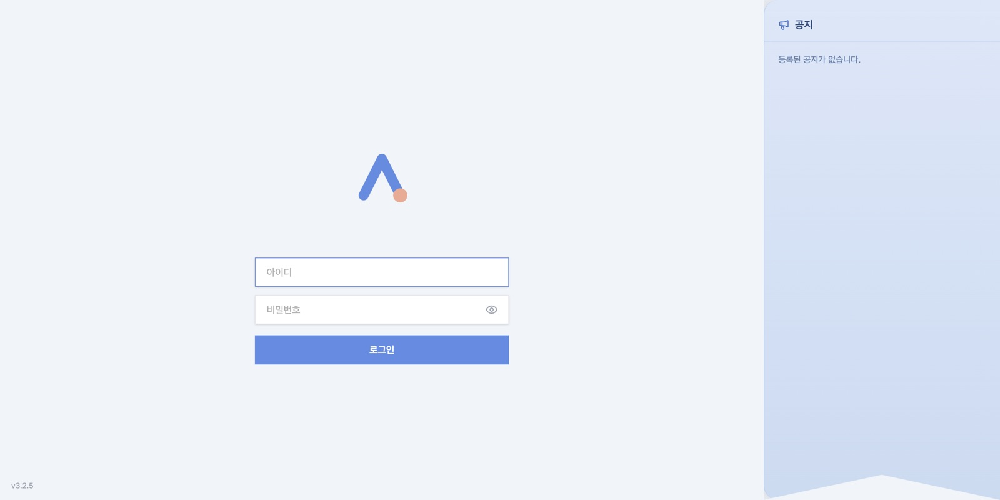
1 2 3 4 5| 번호 | 명칭 | 기능 |
|---|---|---|
| 1 | 아이디 | 기관에서 발급받은 아이디를 입력합니다. 마지막으로 로그인한 아이디가 자동으로 채워집니다. |
| 2 | 비밀번호 | 비밀번호를 입력합니다. 보안을 위하여 비밀번호는 저장되지 않습니다. |
| 3 | 비밀번호 보기 | 누르고 있는 동안 입력한 비밀번호를 글자로 확인할 수 있습니다. |
| 4 | 로그인 | 입력한 정보로 로그인합니다. 키보드의 <Enter> 키를 눌러도 됩니다. |
| 5 | 버전 표시 | 현재 설치된 프로그램의 버전입니다. 문의 시 이 번호를 알려 주십시오. |
로그인하면 아래와 같은 기본 화면이 나타납니다. 왼쪽은 원본 파일, 오른쪽은 변환 결과를 보여 주는 구조입니다.
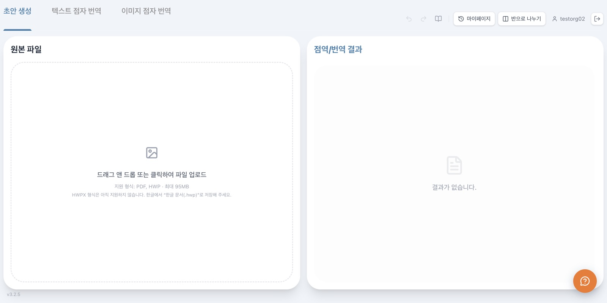
1 2 3 4 5 6 7 8 9 10 11| 번호 | 명칭 | 기능 |
|---|---|---|
| 1 | 변환 모드 탭 | 변환 방식을 고릅니다. 탭마다 작업 내용이 따로 보관되므로 탭을 옮겨도 앞서 하던 작업은 그대로 남습니다. |
| 2 | 되돌리기 · 다시 실행 | 결과 수정을 되돌리거나 다시 실행합니다. 키보드의 <Ctrl>+<Z>, <Ctrl>+<Shift>+<Z> (또는 <Ctrl>+<Y>) 키를 사용해도 됩니다. |
| 3 | 점자 규정 찾아보기 | 책 모양 단추입니다. 조판 중에 점자 규정과 제작 지침을 앱 안에서 바로 찾아봅니다. 제 8 장을 참조하십시오. |
| 4 | 마이페이지 | 지금까지 작업한 파일 목록, 휴지통, 사용량, 기본 설정 화면으로 이동합니다. |
| 5 | 반으로 나누기 | 결과 영역을 별도의 창으로 분리합니다. 모니터가 두 대일 때 유용합니다. |
| 6 | 계정 표시 | 현재 로그인한 계정의 아이디를 표시합니다. |
| 7 | 로그아웃 | 로그인을 해제하고 로그인 화면으로 돌아갑니다. |
| 8 | 원본 파일 영역 | 변환할 파일을 끌어다 놓거나 눌러서 선택합니다. 파일을 넣으면 이 자리에 원본 미리보기가 표시됩니다. |
| 9 | 점역/번역 결과 영역 | 변환 결과가 판면 격자 형태로 표시됩니다. 기본 규격은 26줄 × 32칸이며 조판 설정에서 바꿀 수 있습니다(제 5 장). |
| 10 | 문의하기 | 크레딧 추가·계정 발급 등을 운영자에게 요청합니다. 제 12 장을 참조하십시오. |
| 11 | 버전 표시 | 현재 프로그램 버전입니다. 문의 시 이 번호를 알려 주십시오. |
변환할 문서의 종류와 원하는 결과에 따라 세 가지 모드 중 하나를 고르십시오. 모드마다 넣을 수 있는 파일 형식이 다릅니다.
| 모드 | 지원 형식 | 기능 |
|---|---|---|
| 초안 생성 | PDF, HWP | 문서를 읽어 묵자 초안과 대체 텍스트 후보를 만듭니다. 그림·수식이 많은 교재에 적합합니다. |
| 텍스트 점자 번역 | TXT, HWP, HWPX | 글자로 된 문서를 점자로 번역합니다. |
| 이미지 점자 번역 | PDF 문서를 읽어 곧바로 점자로 번역합니다. |
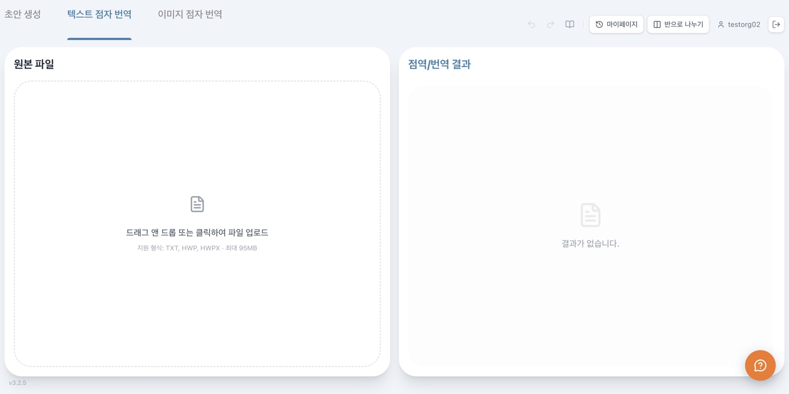
1 2 3 4| 번호 | 명칭 | 기능 |
|---|---|---|
| 1 | 초안 생성 | PDF·HWP 문서를 읽어 묵자 초안과 대체 텍스트 후보를 만듭니다. |
| 2 | 텍스트 점자 번역 | TXT·HWP·HWPX 문서를 점자로 번역합니다. |
| 3 | 이미지 점자 번역 | PDF 문서를 읽어 곧바로 점자로 번역합니다. |
| 4 | 지원 형식 안내 | 선택한 모드에서 넣을 수 있는 파일 형식과 최대 용량(95MB)을 표시합니다. |
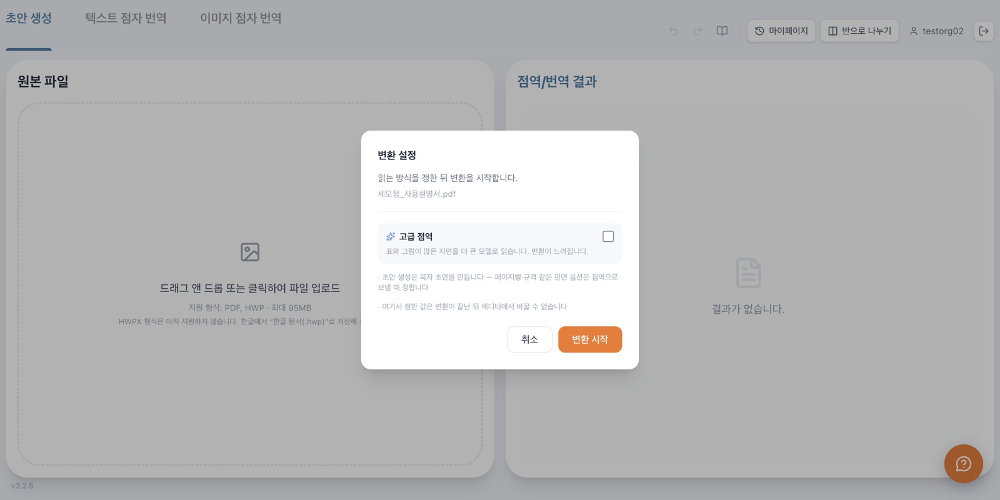
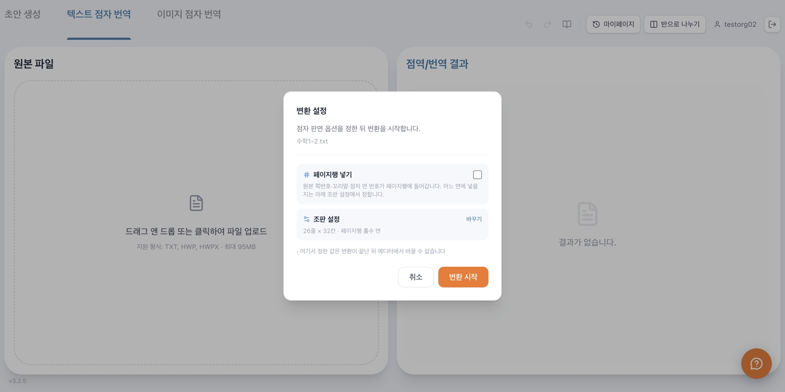
창에 나오는 항목은 모드에 따라 다릅니다. 초안 생성은 묵자 초안을 만들 뿐이라 판면 옵션이 쓰이지 않으므로 고급 점역 하나만 묻고, 점자 판면을 만드는 두 모드는 아래 항목을 모두 묻습니다.
| 항목 | 기능 |
|---|---|
| 고급 점역 (모든 모드) | 표와 그림이 많은 지면을 더 큰 모델로 읽습니다. 변환이 느려집니다. 초안 생성에서는 이 항목만 나옵니다. |
| 페이지행 넣기 | 점자 페이지 맨 아랫줄에 원본 페이지 번호·꼬리말·점자 페이지 번호를 넣을지 정합니다. 어느 페이지에 넣을지는 아래 조판 설정에서 정합니다. |
| 조판 설정 | 평소에는 한 줄 요약만 보여 주고, 바꾸기를 누르면 규격·페이지 번호·꼬리말 등 전체 항목이 펼쳐집니다. 자세한 내용은 제 5 장을 참조하십시오. |
| 변환 시작 | 정한 설정으로 파일을 올리고 변환을 시작합니다. |
| 취소 | 파일을 올리지 않고 창을 닫습니다. |
변환 설정 창의 초기값은 마이페이지의 점역 기본 설정에서 정한 값입니다(제 11 장). 늘 같은 값으로 작업한다면 기본 설정에서 한 번 정해 두는 편이 편리합니다.
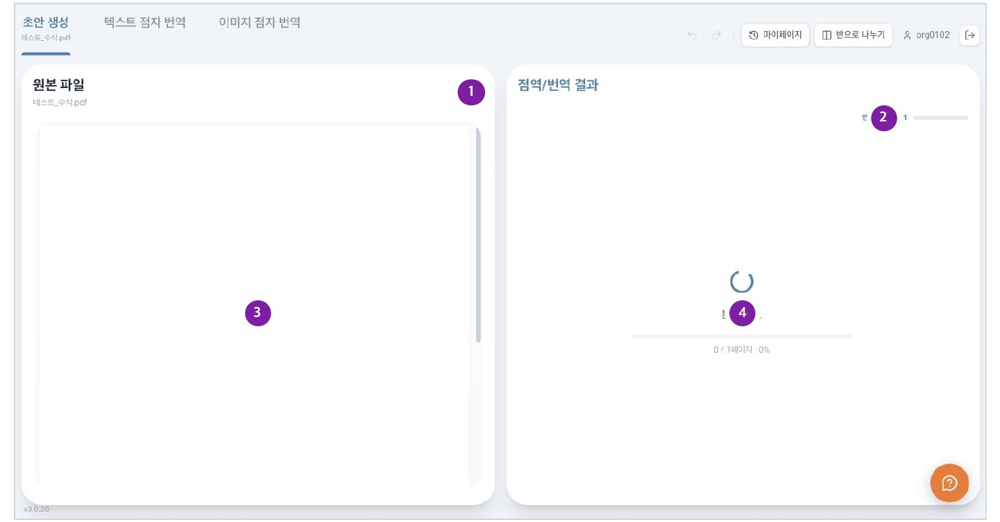
| 번호 | 명칭 | 기능 |
|---|---|---|
| 1 | 닫기(취소) | 변환을 중단하고 원본 파일을 내립니다. 변환 중에 누르면 취소 여부를 다시 묻는 창이 나타납니다. |
| 2 | 변환 진행 | 전체 쪽수 가운데 몇 쪽이 끝났는지 표시합니다. |
| 3 | 원본 미리보기 | 넣은 파일의 원본을 표시합니다. 쪽을 넘기면 그 쪽의 축소본이 먼저 나타난 뒤 원본 화질로 채워집니다. |
| 4 | 진행 상태 표시 | 현재 처리 단계와 진행률(%)을 표시합니다. 결과는 쪽 단위로 완성되는 대로 차례로 나타납니다. |
점자 판면을 어떻게 짤지 정하는 설정입니다. 용어는 페이지로 통일되어 있으며, 각 항목은 값이 실제로 찍히는 자리를 기준으로 이름 붙었습니다.
| 자리 | 무엇이 찍히는가 |
|---|---|
| 페이지행 | 점자 페이지의 맨 아랫줄. 왼쪽에 원본 페이지 번호, 가운데에 꼬리말, 오른쪽에 점자 페이지 번호가 들어갑니다. |
| 원본 페이지 변경선 | 원본 한 페이지가 끝나는 바로 다음 줄. 오른쪽 끝에 새 원본 페이지 번호만 적힙니다. |
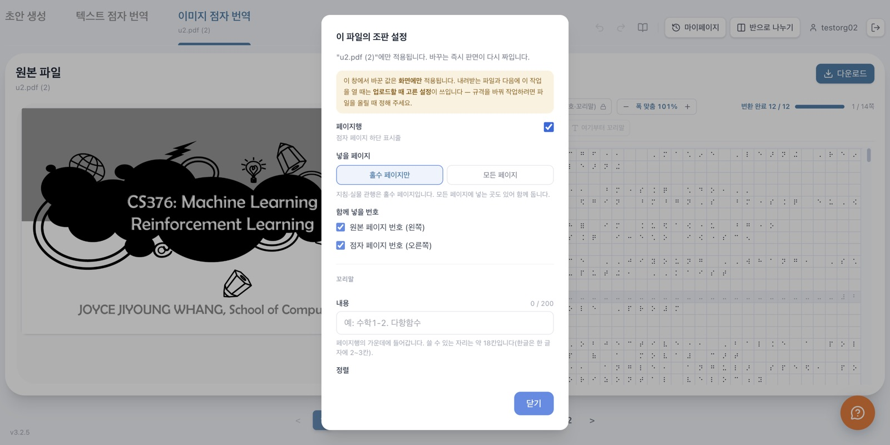
| 여는 곳 | 적용 범위 |
|---|---|
| 변환 설정 창 (파일을 고른 직후) | 이 작업의 결과 파일에 실제로 적용됩니다. 규격을 바꿔 작업하려면 반드시 여기서 정하십시오. |
| 이 파일의 조판 설정 (판면 도구 줄 · 우클릭 메뉴) | 지금 열려 있는 작업의 화면에만 적용됩니다. 바꾸는 즉시 판면이 다시 짜여 결과를 미리 볼 수 있습니다. |
| 점역 기본 설정 (마이페이지 → 사용량) | 앞으로 만드는 새 작업의 초기값이 됩니다. 이미 만든 작업에는 영향을 주지 않습니다. |
| 항목 | 기능 |
|---|---|
| 페이지행 | 점자 페이지 하단의 표시줄을 넣을지 정합니다. 끄면 아래 항목이 모두 숨겨집니다. |
| 넣을 페이지 | 홀수 페이지만 또는 모든 페이지. 지침과 실물 관행은 홀수 페이지입니다. |
| 원본 페이지 번호 (왼쪽) | 페이지행 왼쪽에 원본 문서의 쪽 번호를 넣습니다. 끄면 변경선도 함께 꺼집니다. |
| 점자 페이지 번호 (오른쪽) | 페이지행 오른쪽에 점자 페이지 번호를 넣습니다. |
| 항목 | 기능 |
|---|---|
| 내용 | 페이지행 가운데에 들어갈 문구입니다(최대 200자). 예: “수학1-2. 다항함수”. 쓸 수 있는 자리는 규격과 번호 표시 여부에 따라 계산되어 안내되며(한글은 한 글자에 2~3칸), 넘칠 것 같으면 경고가 표시됩니다. |
| 정렬 | 가운데 또는 오른쪽. 오른쪽으로 두면 점자 페이지 번호에서 두 칸 띄운 자리가 꼬리말의 오른쪽 끝이 됩니다. |
| 수정할 때 적용 범위 | 판면에서 꼬리말을 고칠 때 이 페이지부터 끝까지 바꿀지 이 페이지만 바꿀지 미리 골라 두는 값입니다. |
| 변경선 넣기 | 원본 한 페이지가 끝나는 자리에 구분선을 넣습니다. 끄면 그 줄이 판면에서 사라집니다. |
페이지행의 원본 페이지 번호를 끄면 변경선에 적을 번호가 없어 함께 꺼지며, 다시 켤 수도 없습니다.
| 항목 | 기능 |
|---|---|
| 표지 페이지 수 | 앞에서 이만큼을 표지로 봅니다(0~99). 표지에는 페이지행을 넣지 않고, 본문 번호가 그다음부터 시작합니다. |
| 원본 페이지 번호 시작 | 원본의 첫 쪽을 몇 쪽으로 셀지 정합니다(1~999). 책의 5쪽부터 점역한다면 5로 둡니다. |
| 점자 페이지 번호 시작 | 점자 페이지 번호의 시작값입니다(1~999). 앞 권에서 이어 만든다면 그 뒤 번호로 둡니다. |
| 항목 | 기능 |
|---|---|
| 칸 수 | 한 페이지의 가로 칸 수입니다(8~100). 한국 점자 도서는 32칸입니다. |
| 줄 수 | 한 페이지의 세로 줄 수입니다(4~100). 한국 점자 도서는 26줄이며, 페이지행이 들어가는 페이지의 본문은 25줄이 됩니다. |
32칸 26줄이 아닌 값을 넣으면 “한국 점자 도서 규격이 아닙니다”라는 경고가 표시됩니다. 상장처럼 규격이 다른 문서에만 사용하십시오.
| 고급 점역 | 표와 그림이 많은 지면을 더 큰 모델로 읽습니다. 결과의 정확도가 올라가는 대신 변환이 느려집니다. |
변환이 끝나면 오른쪽에 결과가 판면 격자 형태로 표시됩니다. 격자의 한 칸이 점자 한 글자에 해당하며, 한 페이지의 크기는 조판 설정에서 정한 값(기본 26줄 × 32칸)입니다.
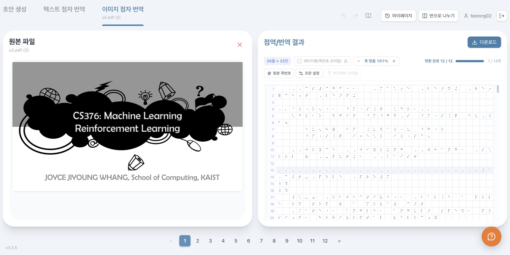
1 2 3 4 5 6 7 8 9 10| 번호 | 명칭 | 기능 |
|---|---|---|
| 1 | 다운로드 | 결과를 파일로 저장합니다. 제 9 장을 참조하십시오. |
| 2 | 면 규격 | 한 페이지의 줄 수와 칸 수를 표시합니다. 조판 설정에서 바꿀 수 있습니다(제 5 장). |
| 3 | 페이지행 표시 | 이 작업이 페이지행을 넣도록 만들어졌는지 보여 줍니다. 업로드할 때 정해지므로 여기서는 바꿀 수 없습니다. |
| 4 | 폭 맞춤 | 판면 격자를 크게·작게 봅니다. 화면 폭에 맞춘 배율이 기본입니다. |
| 5 | 변환 상태 | 완료된 쪽수와 전체 쪽수를 표시합니다. |
| 6 | 면 이동 | 현재 보고 있는 점자 페이지의 번호와 전체 페이지 수입니다. |
| 7 | 판면 도구 | 원본 쪽번호 · 조판 설정 · 여기부터 꼬리말. 6-1 항을 참조하십시오. |
| 8 | 원본 파일 | 넣은 문서의 원본입니다. 결과의 한 부분을 고르면 원본의 해당 위치가 함께 표시됩니다. |
| 9 | 판면 격자 | 변환 결과입니다. 칸을 눌러 커서를 옮기고 글자를 직접 고칠 수 있습니다. |
| 10 | 원본 쪽 넘김 | 원본 문서의 쪽을 넘깁니다. 결과 판면은 스크롤로 이어 봅니다. |
판면 위쪽의 도구 줄에서는 조판에 관한 것을 다룹니다. 현재 보고 있는 페이지의 꼬리말도 이 줄에 함께 표시됩니다.
| 원본 쪽번호 | 이 문서의 첫 쪽을 몇 쪽으로 셀지 정합니다. |
| 조판 설정 | 이 작업의 조판 설정을 엽니다(제 5 장). |
| 꼬리말 | 커서가 놓인 줄부터 꼬리말을 바꿉니다. 판면에서 줄을 먼저 선택해야 사용할 수 있습니다. |
결과의 한 부분을 누르면 그 블록이 선택되고, 원본에서 대응하는 자리에 테두리가 표시됩니다. 원본과 대조하며 확인하십시오.
| 번호 | 명칭 | 기능 |
|---|---|---|
| 1 | 원본 대조 표시 | 고른 블록이 원본의 어디에서 왔는지 테두리로 알려 줍니다. |
| 2 | 선택된 줄 | 고른 줄이 색으로 강조되고 커서가 놓입니다. 이 상태에서 글자를 고치거나 우클릭 메뉴를 씁니다. |
블록을 더하거나 지우고 순서를 옮기는 일은 우클릭 메뉴에서 합니다(6-3 항). 마우스로 한 줄 안의 구간을 끌어 고르면 복사·잘라내기를 쓸 수 있습니다.
판면의 아무 줄에서나 마우스 오른쪽 단추를 누르면 그 줄을 기준으로 아래 기능을 사용할 수 있습니다.
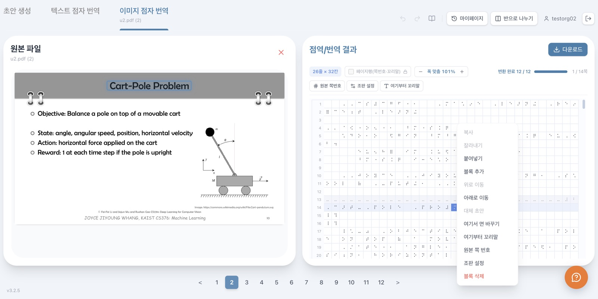
※ 흐리게 보이는 항목은 지금 쓸 수 없는 것입니다 — 구간을 고르지 않았거나, 그 블록에 대체 초안이 없거나, 이 페이지의 첫·마지막 블록이어서입니다.
| 항목 | 기능 |
|---|---|
| 복사 · 잘라내기 | 판면에서 끌어 고른 구간을 복사하거나 잘라냅니다. 먼저 구간을 골라야 사용할 수 있습니다. |
| 붙여넣기 | 커서 자리에 붙여넣습니다. |
| 블록 추가 · 위로 이동 · 아래로 이동 · 블록 삭제 | 블록 편집 도구와 같은 기능입니다. |
| 대체 초안 | 그 블록의 대체 텍스트 후보 목록을 엽니다. 후보가 없는 블록에서는 사용할 수 없습니다. |
| 여기서 면 바꾸기 | 이 줄부터 새 페이지에서 시작하게 합니다. <Ctrl>+<Enter> 키와 같은 기능입니다. (준비 중) |
| 여기부터 꼬리말 | 단원이 바뀌는 자리에서 꼬리말을 바꿉니다. (준비 중) |
| 원본 쪽 번호 | 이 줄이 속한 원본 쪽의 번호를 고칩니다. |
| 조판 설정 | 이 작업의 조판 설정을 엽니다(제 5 장). |
| 키 | 기능 |
|---|---|
| <F><D><S> · <J><K><L> | 화음처럼 함께 눌렀다 떼어 점자 한 글자를 입력합니다. 각 키는 차례로 1·2·3·4·5·6 점입니다. 글자는 커서 자리에 끼워 넣어집니다. |
| ← → Home End | 커서를 좌우 끝으로 옮깁니다. |
| <Backspace> <Delete> | 고른 구간을 지웁니다. |
| <Ctrl>+<C> / <X> / <V> | 고른 구간을 복사 · 잘라내기 · 붙여넣기 합니다. 구간은 한 줄 안에서 마우스로 끌어 고릅니다. |
| <Ctrl>+<Z> | 되돌리기. |
| <Ctrl>+<Shift>+<Z> · <Ctrl>+<Y> | 다시 실행. |
| <Ctrl>+<S> | 지금까지의 수정을 즉시 저장합니다. 페이지를 넘기거나 프로그램을 닫을 때에도 자동으로 저장되며, 저장이 끝나면 판면 위에 “저장됨”이 표시됩니다. |
| <Ctrl>+<F> | 찾기 막대를 엽니다(제 7 장). |
| <Ctrl>+<Enter> | 커서가 놓인 줄부터 새 페이지에서 시작합니다. (준비 중) |
수식이 들어 있는 블록에 마우스를 얹으면 화면 아래쪽 라텍스 변환기에 그 블록의 문장 전체가 수식 모양으로 표시됩니다. 격자에서는 수식이 기호 그대로 보이므로, 원본과 맞는지 이 자리에서 확인하십시오.
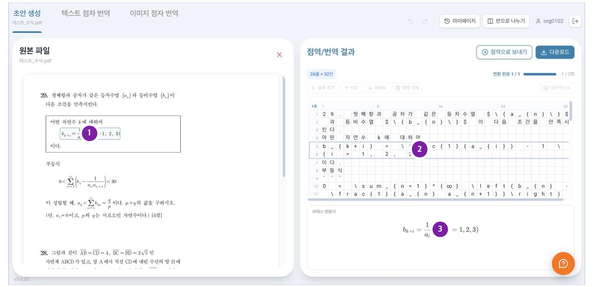
| 번호 | 명칭 | 기능 |
|---|---|---|
| 1 | 원본의 해당 위치 | 같은 내용이 원본의 어디에 있는지 테두리로 알려 줍니다. |
| 2 | 마우스를 얹은 블록 | 마우스를 얹기만 하면 됩니다. 누르지 않아도 아래에 표시됩니다. |
| 3 | 라텍스 변환기 | 해당 블록의 문장 전체를 수식 모양으로 표시합니다. |
그림·표 등 시각 요소 블록을 고르고 대체 텍스트를 누르면 후보 목록 창이 나타납니다. 창에서 다음을 할 수 있습니다.
키보드의 <Ctrl>+<F> 키를 누르면 화면 위쪽에 찾기 막대가 나타납니다. 원본과 결과에서 원하는 말을 찾고, 결과의 말을 다른 말로 바꿀 수 있습니다.
| 번호 | 명칭 | 기능 |
|---|---|---|
| 1 | 찾을 말 | 찾을 내용을 입력합니다. 입력하는 즉시 결과가 강조됩니다. |
| 2 | 찾은 개수 | 현재 몇 번째 결과를 보고 있는지와 전체 개수를 표시합니다. |
| 3 | 이전 · 다음 | 찾은 자리를 차례로 옮겨 갑니다. <Enter> 키는 다음, <Shift>+<Enter> 키는 이전입니다. |
| 4 | 찾을 범위 | 전체 · 원본만 · 결과만 가운데 고릅니다. 모드에 따라 없는 범위는 표시되지 않습니다. |
| 5 | 점자로 입력 | 켜면 찾을 말을 6점 키로 입력합니다. 점자 자체를 찾을 때 사용합니다. |
| 6 | 닫기 | 찾기 막대를 닫습니다. <Esc> 키를 눌러도 됩니다. |
| 7 | 바꾸기 펼침 | 누르면 아래 바꾸기 줄이 나타나거나 접힙니다. |
| 8 | 바꿀 말 | 바꾸어 넣을 내용을 입력합니다. 점자로 입력을 켜 두면 점자로 입력됩니다. |
| 9 | 바꾸기 | 현재 찾은 한 자리만 바꿉니다. |
| 10 | 모두 바꾸기 | 찾은 자리를 모두 한 번에 바꿉니다. |
| 11 | 안내 문구 | 바꾸기는 결과(출력)에만 적용된다는 안내입니다. |
찾은 자리는 원본과 판면 양쪽에서 색으로 표시되며, 지금 보고 있는 자리는 더 진하게 표시됩니다.
조판을 하다 보면 규정을 확인할 일이 잦습니다. 화면 위쪽의 책 모양 단추를 누르면 점자 규정과 제작 지침을 앱 안에서 바로 찾아볼 수 있습니다. 별도의 문서를 열어 두지 않아도 됩니다.
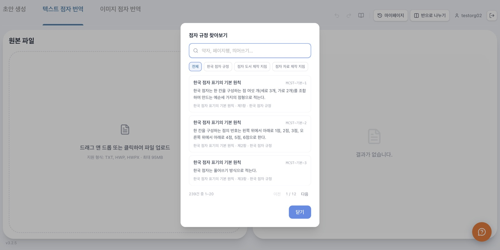
| 항목 | 기능 |
|---|---|
| 검색어 | 찾을 말을 입력합니다. 입력을 멈추면 잠시 뒤 자동으로 검색됩니다. |
| 문서 | 전체와 규정 문서 이름(예: 한국 점자 규정)이 단추로 놓입니다. 원하는 문서만 골라 걸러 봅니다. |
| 목록 | 규정 항목이 20건씩 표시됩니다. 항목을 누르면 본문을 그 자리에서 볼 수 있습니다. |
| 쪽 넘기기 | 목록 아래에서 다음·이전 묶음으로 넘어갑니다. |
결과 영역 오른쪽 위의 다운로드를 누르면 아래 창이 나타납니다.
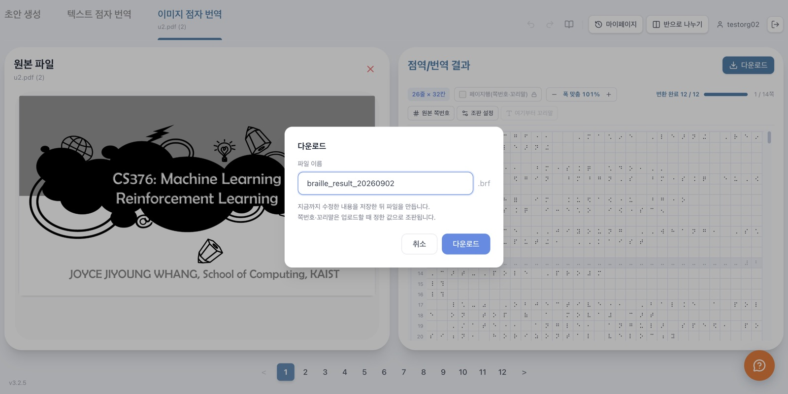
1 2 3 4 5| 번호 | 명칭 | 기능 |
|---|---|---|
| 1 | 파일 이름 | 저장할 이름을 입력합니다. 날짜가 들어간 이름이 미리 채워집니다. |
| 2 | 확장자 | 저장되는 파일 형식입니다. 점자 결과는 .brf, 초안 생성 결과는 .txt입니다. |
| 3 | 안내 문구 | 지금까지 고친 내용을 저장한 뒤 파일을 만든다는 안내입니다. 쪽번호·꼬리말은 업로드할 때 정한 값으로 조판된다는 것도 함께 알립니다. |
| 4 | 취소 | 저장하지 않고 창을 닫습니다. |
| 5 | 다운로드 | 파일을 만들어 내려받습니다. |
초안 생성 결과 화면에서 점역으로 보내기를 누르면, 지금 결과를 그대로 점자 번역 작업으로 넘깁니다. 초안을 확인·수정한 뒤에 사용하십시오.
이때 만들어지는 것은 텍스트 점자 번역 작업이므로, 파일을 직접 올렸을 때와 똑같이 변환 설정 창이 먼저 나타납니다(제 4 장). 페이지행·규격·꼬리말은 이 자리에서 정해야 하며, 변환이 끝난 뒤에는 바꿀 수 없습니다.
반으로 나누기를 누르면 결과 영역이 별도의 창으로 분리되고, 본 화면에는 원본만 전체 폭으로 표시됩니다. 두 창의 내용은 서로 이어져 있어 한쪽에서 고치면 다른 쪽에도 바로 반영됩니다.
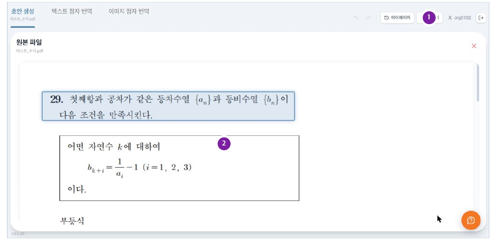
| 번호 | 명칭 | 기능 |
|---|---|---|
| 1 | 합치기 | 나뉜 결과 창을 닫고 본 화면으로 되돌립니다. |
| 2 | 원본 전체 보기 | 결과 창을 분리하는 동안 원본이 화면 전체 폭으로 표시됩니다. |
화면 위쪽의 마이페이지를 누르면 지금까지 작업한 파일을 관리할 수 있습니다.
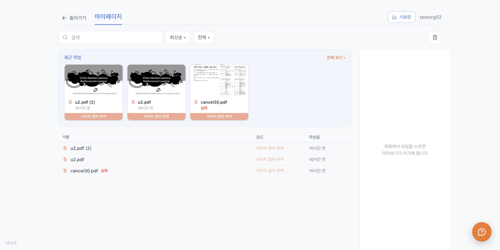
1 2 3 4 5 6 7 8 9| 번호 | 명칭 | 기능 |
|---|---|---|
| 1 | 돌아가기 | 작업 화면으로 되돌아갑니다. |
| 2 | 사용량 | 크레딧 사용 현황 화면으로 이동합니다. 제 11 장을 참조하십시오. |
| 3 | 검색 | 파일 이름으로 작업을 찾습니다. |
| 4 | 정렬 | 최신순·이름순 등으로 목록의 차례를 바꿉니다. |
| 5 | 모드 거르기 | 변환 모드별로 목록을 걸러서 봅니다. |
| 6 | 휴지통 | 지운 작업을 모아 둔 곳으로 이동합니다. |
| 7 | 최근 작업 | 가장 최근에 다룬 작업을 미리보기 그림과 함께 보여 줍니다. |
| 8 | 미리보기 영역 | 목록에서 파일을 누르면 이 자리에 미리보기와 정보가 표시됩니다. |
| 9 | 전체 목록 | 모든 작업을 이름·모드·작성일과 함께 표로 보여 줍니다. |
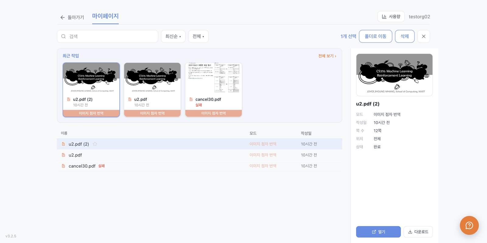
1 2 3 4 5 6 7| 번호 | 명칭 | 기능 |
|---|---|---|
| 1 | 선택 개수 | 고른 파일의 수를 표시합니다. |
| 2 | 폴더로 이동 | 고른 파일을 다른 폴더로 옮깁니다. |
| 3 | 삭제 | 고른 파일을 휴지통으로 옮깁니다. |
| 4 | 선택 해제 | 고른 상태를 풉니다. |
| 5 | 작업 정보 | 모드·작성일·쪽수·상태를 표시합니다. |
| 6 | 열기 | 고른 작업을 작업 화면으로 불러옵니다. 원본과 결과를 함께 불러오므로 잠시 기다려 주십시오. |
| 7 | 다운로드 | 결과 파일을 곧바로 내려받습니다. |
마이페이지의 사용량을 누르면 크레딧 사용 현황과 점역 기본 설정을 볼 수 있습니다.
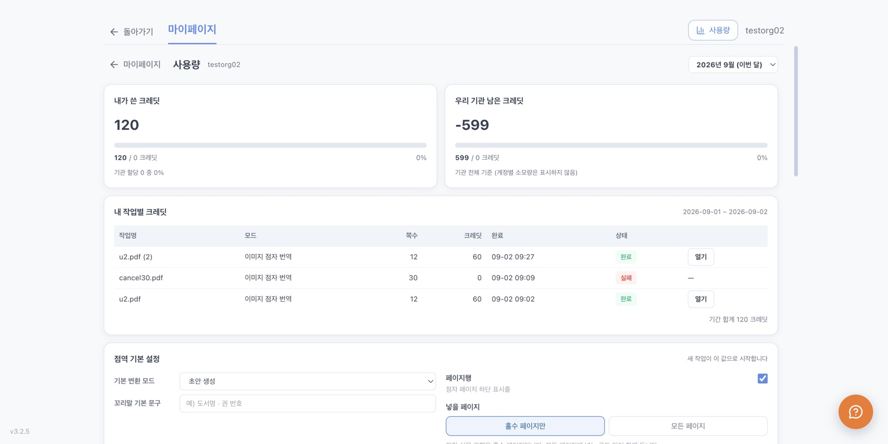
1 2 3 4 5| 번호 | 명칭 | 기능 |
|---|---|---|
| 1 | 기간 선택 | 보고자 하는 달을 고릅니다. |
| 2 | 내가 쓴 크레딧 | 고른 기간에 내 계정이 사용한 크레딧과 할당량 대비 비율입니다. |
| 3 | 우리 기관 남은 크레딧 | 기관 전체 기준으로 남은 크레딧입니다. 계정별 소모량은 표시되지 않습니다. |
| 4 | 작업별 크레딧 | 작업 이름·모드·쪽수·크레딧·완료 시각·상태를 표로 보여 줍니다. |
| 5 | 열기 | 해당 작업을 작업 화면으로 불러옵니다. |
같은 화면 아래쪽의 점역 기본 설정에서 정한 값은 새 작업이 시작할 때의 초기값이 됩니다. 이미 만든 작업에는 영향을 주지 않습니다. 값을 바꾼 뒤에는 설정 저장을 눌러 주십시오.
| 항목 | 기능 |
|---|---|
| 기본 변환 모드 | 새 작업을 시작할 때 처음 열릴 모드를 정합니다. |
| 꼬리말 기본 문구 | 새 작업에 기본으로 넣을 꼬리말입니다(최대 200자). |
| 조판 설정 | 페이지행·꼬리말·페이지 번호·용지 규격·점역 방식의 기본값입니다. 각 항목의 자세한 설명은 제 5 장을 참조하십시오. |
| 점역 옵션 (준비 중) | 점자 등급(1급 정자 / 2급 약자)과 한영 혼용 규정을 고릅니다. 아직 변환에 전달되지 않아 무엇을 골라도 결과는 같습니다. |
화면 오른쪽 아래의 둥근 문의 단추를 누르면 문의 창이 나타납니다. 문의는 세모점 운영자에게 접수되며, 답변은 기관 담당자에게 전달됩니다.
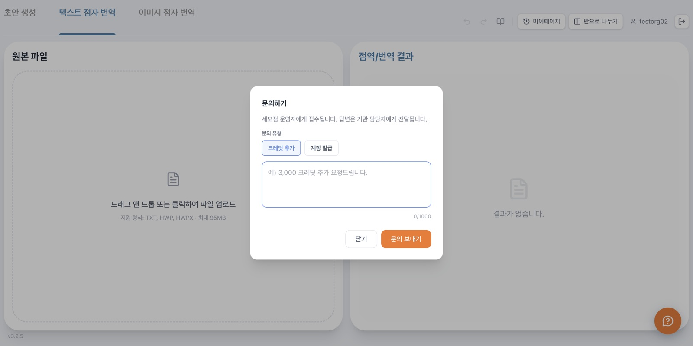
1 2 3 4 5| 번호 | 명칭 | 기능 |
|---|---|---|
| 1 | 문의 유형 | 크레딧 추가 또는 계정 발급 가운데 고릅니다. |
| 2 | 문의 내용 | 요청 내용을 적습니다. 필요한 수량과 사유를 함께 적어 주십시오. |
| 3 | 글자 수 | 입력한 글자 수와 최대 글자 수(1,000자)를 표시합니다. |
| 4 | 닫기 | 보내지 않고 창을 닫습니다. |
| 5 | 문의 보내기 | 작성한 문의를 접수합니다. |
기관 관리자 계정으로 로그인하면 작업 화면 대신 기관 관리 화면이 바로 나타납니다. 일반 작업자 계정에서는 이 화면을 사용할 수 없습니다.
화면 위쪽에서 기관 이름, 이번 달 사용한 크레딧, 남은 크레딧, 계정 수를 한눈에 볼 수 있습니다. 기간을 바꾸어 지난달 현황도 확인할 수 있습니다.
기관에 속한 계정이 표로 표시됩니다. 각 줄에서 다음을 확인할 수 있습니다.
| 아이디 | 계정의 로그인 아이디입니다. 본인 계정에는 표시가 붙습니다. |
| 이름 · 역할 | 사용자 이름과 역할(작업자 · 기관 관리자)입니다. |
| 이번 달 사용량 | 해당 계정이 이번 달에 사용한 크레딧입니다. |
| 상태 | 사용 중 · 정지 등 계정의 상태입니다. |
목록에서 계정을 누르면 상세 화면이 열립니다. 해당 계정의 작업 내역과 크레딧 사용 내역을 확인할 수 있습니다.
이상이 있을 때에는 아래 내용을 먼저 확인해 주십시오. 확인 후에도 같은 증상이 계속되면 문의하기로 알려 주십시오.
| 로그인이 되지 않습니다 | 아이디와 비밀번호를 다시 확인하십시오. 대소문자를 구분합니다. 인터넷 연결 상태도 함께 확인하십시오. |
| 사용 중에 갑자기 로그인 화면으로 돌아갑니다 | 다른 컴퓨터에서 같은 계정으로 로그인하면 먼저 쓰던 화면은 자동으로 로그아웃됩니다. 계정을 다른 사람과 함께 쓰고 있지 않은지 확인하십시오. |
| 파일을 넣을 수 없습니다 | 고른 모드가 지원하는 형식인지 확인하십시오(제 4 장). 파일 크기는 95MB 이하여야 합니다. |
| 변환이 실패했습니다 | 원본 문서가 손상되지 않았는지 확인한 뒤 다시 시도하십시오. 실패한 작업에는 크레딧이 차감되지 않습니다. |
| 한글 문서를 넣었는데 글자가 거의 없습니다 | 텍스트 점자 번역은 문서에서 글자를 뽑아 처리합니다. 글자 없이 이미지만 들어 있는 문서라면 초안 생성이나 이미지 점자 번역을 사용하십시오. |
| “아직 준비 중입니다” 안내가 나타납니다 | 쪽 바꿈·구간 꼬리말·점역 옵션은 화면에서만 동작하고 결과 파일에는 아직 반영되지 않아 막아 둔 기능입니다(제 1 장). 안내 창의 설명을 확인해 주십시오. |
| 조판 설정을 바꿨는데 내려받은 파일이 그대로입니다 | 편집 중에 연 이 파일의 조판 설정은 화면에만 적용됩니다. 결과 파일의 규격을 바꾸려면 파일을 올릴 때 변환 설정 창에서 정해 주십시오(제 5 장). |
| 수식이 기호 그대로 보입니다 | 판면 격자는 점자 조판을 그대로 보여 주는 화면입니다. 수식의 모양을 확인하려면 해당 블록에 마우스를 얹어 화면 아래 라텍스 변환기에서 확인하십시오. |
| 대체 텍스트 단추가 눌리지 않습니다 | 대체 텍스트는 그림·표 등 시각 요소 블록에만 사용할 수 있습니다. 해당 블록을 먼저 고르십시오. |
| 복사·잘라내기가 눌리지 않습니다 | 먼저 판면에서 마우스를 끌어 구간을 골라야 합니다. 구간은 한 줄 안에서 고릅니다. |
| 바꾸기를 했는데 원본이 그대로입니다 | 정상입니다. 바꾸기는 결과(출력)에만 적용되며 원본 파일은 바뀌지 않습니다. |
| 크레딧이 부족하다고 표시됩니다 | 기관에 할당된 크레딧을 모두 사용한 상태입니다. 문의하기로 추가를 요청하십시오. |
| “저장 실패 — 다시 시도”가 나타납니다 | 네트워크가 끊겼을 때 나타납니다. 연결을 확인한 뒤 그 문구를 눌러 다시 저장하십시오. 수정 내용은 화면에 그대로 남아 있습니다. |
| 화면이 하얗게 보이거나 반응이 없습니다 | 프로그램을 종료한 뒤 다시 실행하십시오. 작업 내용은 마이페이지에 보관되어 있으므로 다시 불러올 수 있습니다. |
| 제품명 | 세모점(Semojum) |
| 종류 | 점자 점역·번역 데스크톱 프로그램 |
| 소프트웨어 버전 | 3.2.6 |
| 사용 환경 | Windows 10 이상 (64비트) |
| 필수 조건 | 인터넷 연결, 발급받은 계정 |
| 변환 모드 | 초안 생성 · 텍스트 점자 번역 · 이미지 점자 번역 |
| 지원 파일 형식 | PDF, HWP(초안 생성) / TXT, HWP, HWPX(텍스트 점자 번역) / PDF(이미지 점자 번역) |
| 최대 파일 크기 | 95MB |
| 저장 형식 | .brf(점자 결과) / .txt(초안 생성 결과) |
| 기본 용지 규격 | 26줄 × 32칸 (칸 8~100 · 줄 4~100 범위에서 변경 가능) |
| 페이지 번호 | 원본·점자 페이지 번호 시작값 1~999 · 표지 제외 0~99쪽 |
| 꼬리말 | 최대 200자 |
| 점자 입력 | 6점 입력 (F D S · J K L) |
| 휴지통 보관 기간 | 30일 |
| 업데이트 | 실행 시 자동 확인 · 사용자가 설치를 눌러 진행 (제 1 장 참조) |
프로그램 사용 중 문의 사항은 화면 오른쪽 아래의 문의하기 단추를 이용하시거나, 소속 기관의 담당자에게 문의하십시오. 문의 시 화면 왼쪽 아래에 표시된 버전 번호를 함께 알려 주시면 신속한 처리에 도움이 됩니다.